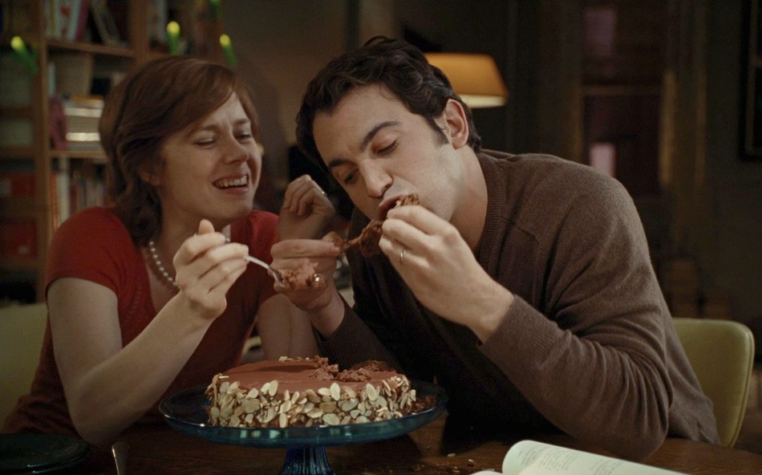

Long Island City, Queens, N.Y.
Queens, 2002

Our kitchen table, and the Queen of Sheba, going fast.
Everything tonight comes out of Julia's book, cooked in a kitchen the size of a closet. The beef is attempt two. I fell asleep on attempt one.
Julie
COMMENTS (17)
Did the lobsters make it? I check this blog before my email.
posted by a reader, 11:42 P.M.
DAY
1
of 365
524 recipes
At Julie's, above the pizza place
The Dinner
To startPriced at cost
Kir$3.65
Dry white Burgundy poured over crème de cassis, a blackberry.
Julie's bruschetta$5.24
Toasted ciabatta rubbed with garlic, ripe tomato, basil, olive oil.
The main event
Lobster, melted butter$26.00
Two live lobsters, boiled, lemon and drawn butter.
Bought live. There was screaming.
Boeuf bourguignon$31.50
Beef braised in red wine, bacon, carrots, onions, mushrooms.
Attempt number two. Nobody fell asleep.
Pâté de canard en croûte$20.02
Whole duck, boned, stuffed with pork and veal, in pastry.
Boned by hand. It took a while.
Prices are the grocery bill. No Cobb salad.